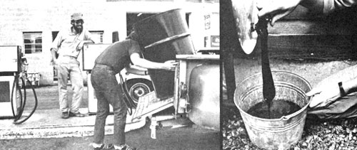

ABOVE, LEFT TO RIGHT: Many service stations across the United States still give away used crankcase oil, and some will even pay you to cart the ""worthless"" liquid off.... It's an easy matter to strain the oil: All you have to do is follow the instructions in MOTHER's plans...